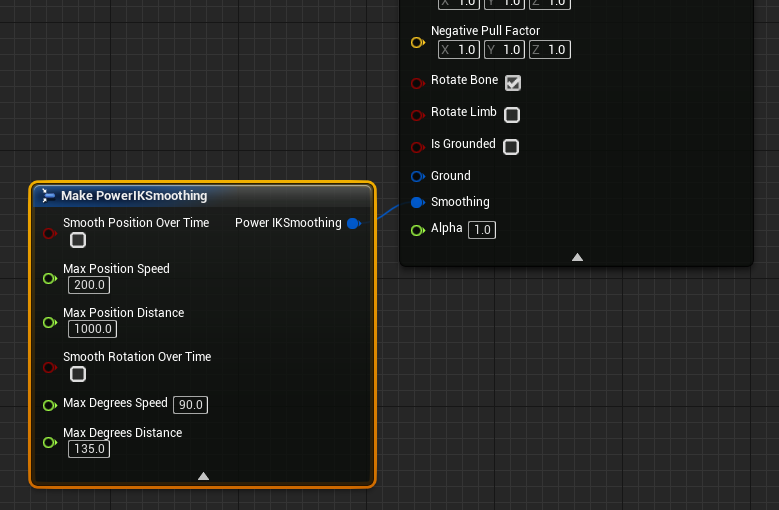
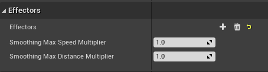

Effector Smoothing
Power IK comes with built-in temporal smoothing to help reduce pops and jitters in fast moving effector inputs. You can apply your own smoothing to the inputs to Power IK effectors, but the built-in smoothing has some advantages:
- does not introduce non-linear accelerations where there are non in the input
- clamps positions and rotations to within a threshold distance / angle
To enable Effector Smoothing:
- Select an Effector node in the Animation Graph
- Drag off the Smoothing pin to create a PowerIKSmoothing struct
- Toggle the settings as desired.
Smoothing Settings

- Smooth Position Over Time: bool, if True the position of the effector will be smoothed over time.
- Max Position Speed: this is the maximum speed, in centimeters per second, that the effector is allowed to move. If an input is provided that moves the effector faster than this speed, it will be clamped.
- Max Position Distance: this is the maximum distance, in centimeters, that the effector will be allowed to lag behind the input position. This limits the error that can be introduced from position smoothing.
And similarly for smoothing rotations:
- Smooth Rotation Over Time: bool, if True the rotation of the effector will be smoothed over time.
- Max Degrees Speed: this is the maximum speed, in degrees per second, that the effector is allowed to rotate. If an input is provided that rotates the effector faster than this speed, it will be clamped.
- Max Degrees Distance: this is the maximum angle, in degrees, that the effector will be allowed to lag behind the input rotation. This limits the error that can be introduced from rotation smoothing.
Global Smoothing
All the smoothing settings may be globally adjusted on the solver node itself.
The Smoothing Max Speed Multiplier and Smoothing Max Distance Multiplier are set to 1.0 by default. These values are multplied by the Effector settings to arrive at the final smoothing value.
